Yuan Shikai, president of the Republic of China, in the robes he wore to offer the ancient sacrifice to Heaven, December 1914. A year later he accepted the throne. Public domain, Wikimedia Commons.
Q4 story · Beijing · December 1915
In December 1915 the President of China Accepted the Throne
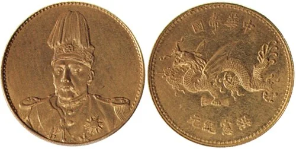
A coin struck in Tianjin for the "Hongxian" reign of Emperor Yuan Shikai, dated 1916: Yuan in his plumed hat on one side, the imperial dragon on the other. Public domain, Wikimedia Commons.
On 12 December 1915 Yuan Shikai, president of the republic, agreed to become emperor.
A hand-picked assembly of 1,993 delegates had voted for monarchy without a single no.
His reign was to be called Hongxian, "Grand Constitution," starting 1 January 1916.
Coins were struck with his face, but within three months he gave the throne up.
Sources: Ebrey, Ch. 24, p. 419; Ernest P. Young, The Presidency of Yuan Shih-k'ai (1977). Image: Tianjin mint, 1916.
Recap · Yuan Shikai before 1912
Recap: In 1898 Yuan Helped Cixi Crush the Reformers, and Then He Built China's Best Army
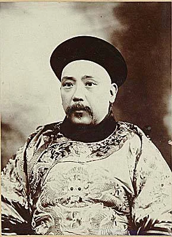
Yuan Shikai as governor-general of Zhili, about 1900, by the Tianjin photographer Fu Sheng. Public domain, Wikimedia Commons.
In 1898 the reformers asked Yuan to help them; instead he warned Cixi's side · Ch. 18 L4 · the coup ↗
After 1901 he commanded the Northern Army and ran the Baoding Military Academy · Ch. 24 L1 · Yuan's army ↗
Ebrey: he wanted "a strong China but not a republican one."
Sources: Ebrey, Ch. 24, pp. 418–419; Ch. 18 L4 and Ch. 24 L1. Image: Fu Sheng, Tianjin, about 1900.
Q4 story · Nanjing and Beijing · 1912
Yuan Made the Deal: The Emperor Abdicated, Sun Stepped Aside, and Yuan Became President
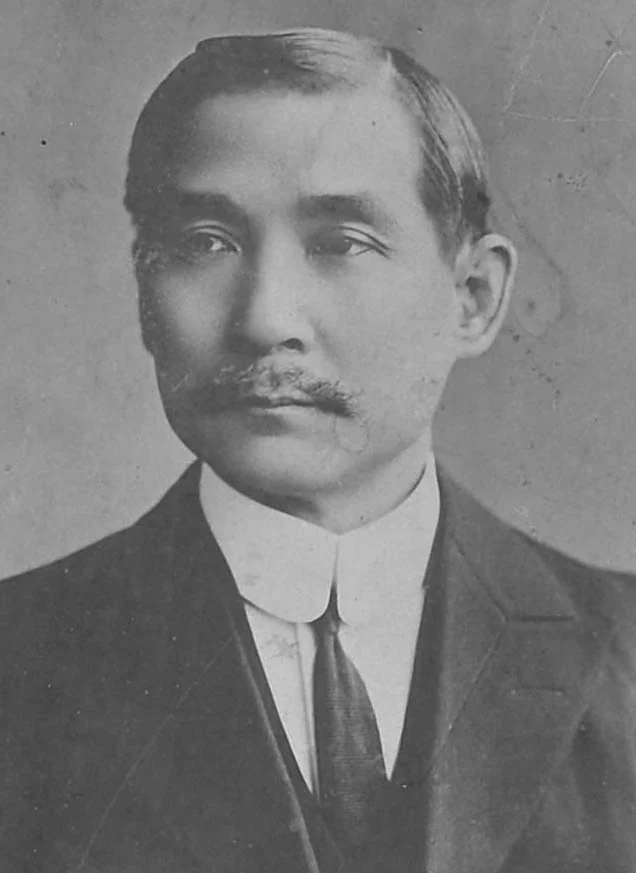
Sun Yatsen, provisional president at Nanjing from 1 January 1912. K. T. Thompson studio, Shanghai, 1911. Public domain, Wikimedia Commons.
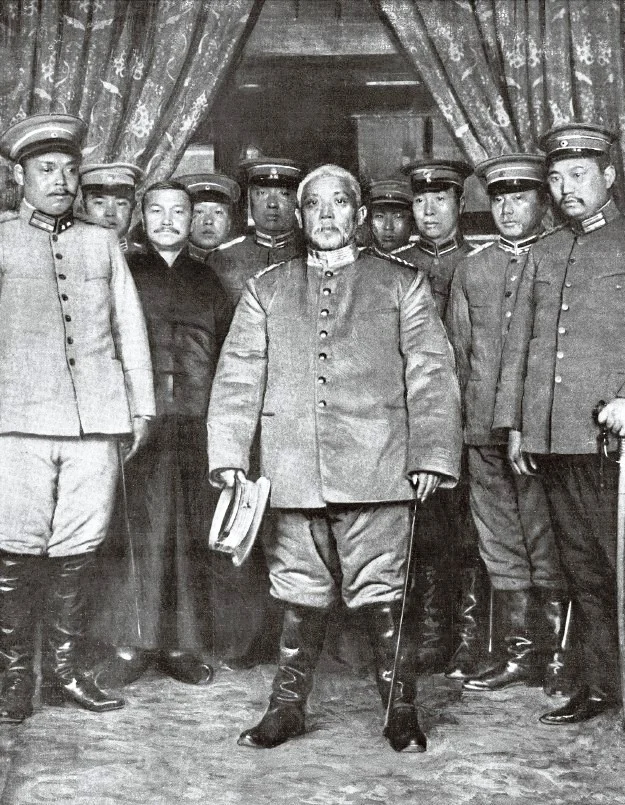
Yuan Shikai with army officers in Beijing just after he took office as provisional president, March 1912. Public domain, Wikimedia Commons.
The revolutionaries feared foreign intervention and could not beat Yuan's army.
So they bargained: if Yuan ended the monarchy, he would be president.
Puyi abdicated on 12 February 1912; Sun resigned the next day.
On 10 March 1912 Yuan took office in Beijing, not in the revolutionaries' capital, Nanjing.
Names in This Story
Yuan Shikaigeneral and president, 1859–1916; pronounced "ywen shir-kye"
Sun Yatsenrevolutionary leader, provisional president Jan.–Feb. 1912
Sources: Ebrey, Ch. 24, p. 419; Young, The Presidency of Yuan Shih-k'ai (1977). Images: K. T. Thompson studio, 1911; unknown photographer, 1912.
Q4 story · The first elections · 1912–1913
In 1913 the Nationalists Won the Elections, and Their Leader Song Jiaoren Was Shot
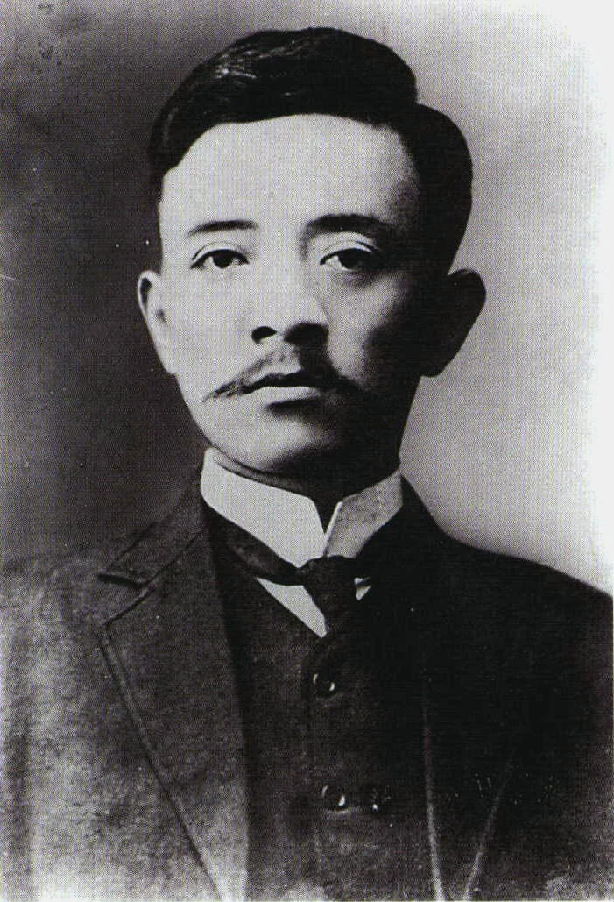
Song Jiaoren (1882–1913), who organized the Nationalist Party and led it to victory in China's first national election. Public domain, Wikimedia Commons.
Winter 1912–13: about 40 million men, roughly a tenth of the population, could vote.
Sun's new Nationalist Party won 269 of 596 seats in the House and 123 of 274 in the Senate.
Its organizer, Song Jiaoren, aged 30, expected to become prime minister and check Yuan's power.
On 20 March 1913 a gunman shot him at the Shanghai railway station; he died two days later.
Names in This Story
Song JiaorenNationalist organizer, 1882–1913; "sung jyow-run"
Nationalist Party (Guomindang)Sun's party, founded 1912; "gwo-min-dahng"
Sources: Ebrey, Ch. 24, p. 419; Young, The Presidency of Yuan Shih-k'ai (1977). Image: unknown photographer, about 1912.
Q4 story · Beijing · April 1913
Yuan Borrowed £25 Million from Foreign Banks Without Asking Parliament
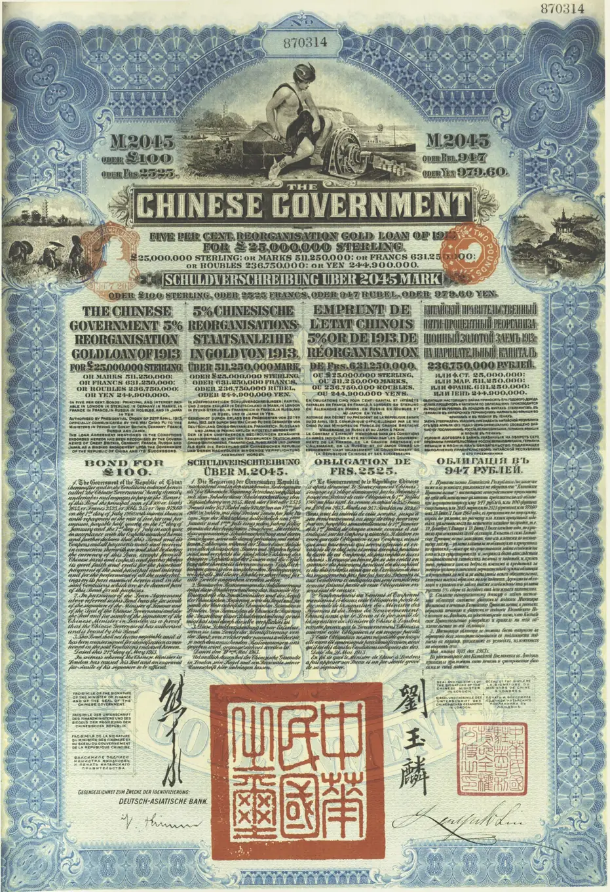
A £100 bond of the Chinese Government 5% Reorganisation Gold Loan of 1913, issued through the German-Asiatic Bank. Public domain, Wikimedia Commons.
In April 1913 Yuan's cabinet signed a £25 million loan with banks from five powers.
Ebrey calls it "a $100 million loan from a foreign consortium."
It ran 47 years at 5 percent, secured on China's salt taxes, which foreigners would help collect.
Nationalist leaders protested that only parliament could approve it; the bankers signed anyway.
Sources: Ebrey, Ch. 24, p. 419; Foreign Relations of the United States, 1913, doc. 197. Image: Deutsch-Asiatische Bank, 1913.
Q4 story · The Yangzi provinces · July–September 1913
Seven Provinces Rose Against Yuan in 1913, and His Armies Crushed Them in Two Months
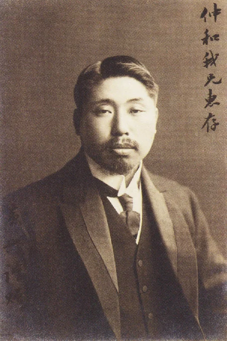
Huang Xing (1874–1916), Sun Yatsen's chief military partner, who led the revolt at Nanjing in 1913. Public domain, Wikimedia Commons.
In June 1913 Yuan dismissed three Nationalist governors in the south.
In July seven provinces declared independence; Nationalists called it the Second Revolution.
Yuan's Northern Army beat them in weeks; Nanjing fell on 1 September.
Sun, Huang Xing, and other leaders fled once more to Japan.
Sources: Ebrey, Ch. 24, p. 419; Young, The Presidency of Yuan Shih-k'ai (1977). Image: unknown photographer, before 1906.
Q4 story · Beijing · 1913–1914
Yuan Outlawed the Nationalist Party and Abolished Every Assembly Down to the County
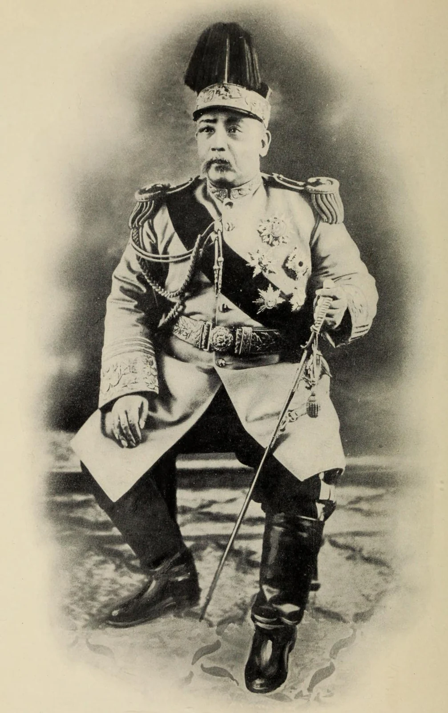
Yuan Shikai as president, photographed in 1914, the year he closed the assemblies. From the papers of the British consul Sir Alexander Hosie. Public domain, Wikimedia Commons.
October 1913: with troops around the building, parliament elected Yuan president for five years.
November 1913: he outlawed the Nationalist Party and expelled its members from parliament.
January 1914: he dissolved parliament; in February the provincial assemblies.
A new constitution in May 1914 gave the president almost unlimited power.
Sources: Ebrey, Ch. 24, p. 419; Young, The Presidency of Yuan Shih-k'ai (1977). Image: Sir Alexander Hosie collection, 1914.
Q4 concept · Autocracy
Concept: Autocracy Is One Man's Rule, Unchecked by Parliament, Parties, or Courts
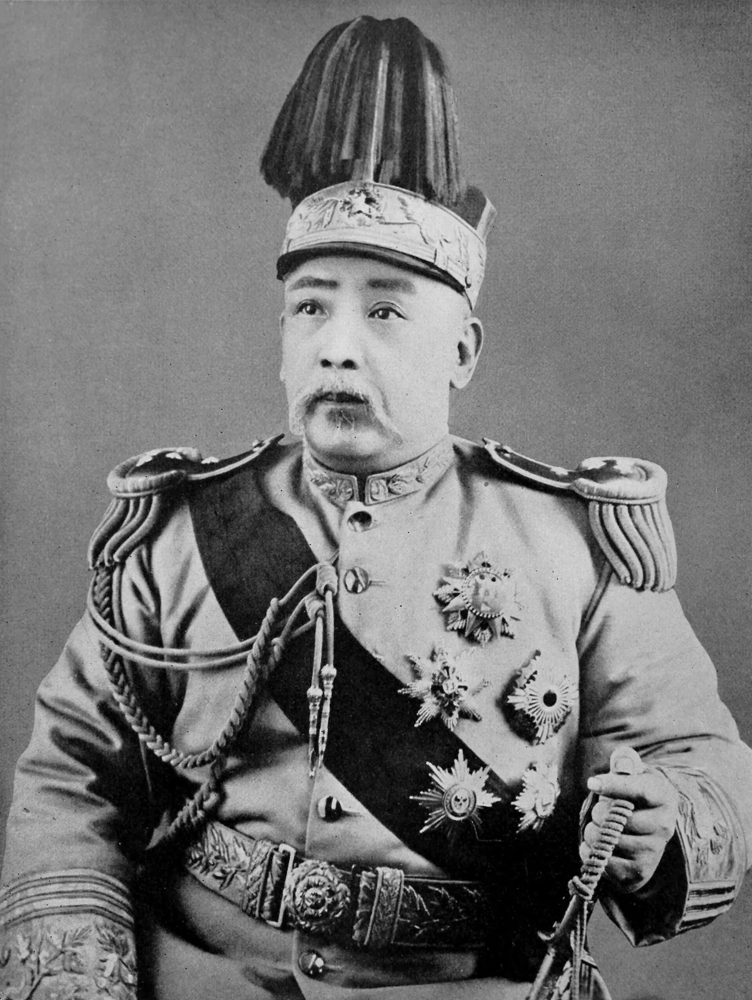
Yuan Shikai, president of the Republic of China, in a portrait published in 1915. Public domain, Wikimedia Commons.
Concept
Autocracy
A system of government in which one ruler holds supreme power, and no elected body, party, court, or law can effectively limit him.
Yuan kept the title of president, but by 1914 he ruled alone.
Ebrey: Yuan wanted "careful central planning" on the German and Japanese model.
He also extended schools, suppressed opium, and reformed the courts.
Sources: Ebrey, Ch. 24, p. 419.
Q4 story · Beijing · January–May 1915
In 1915 Japan Presented Twenty-One Demands, and on 9 May Yuan Accepted Most of Them
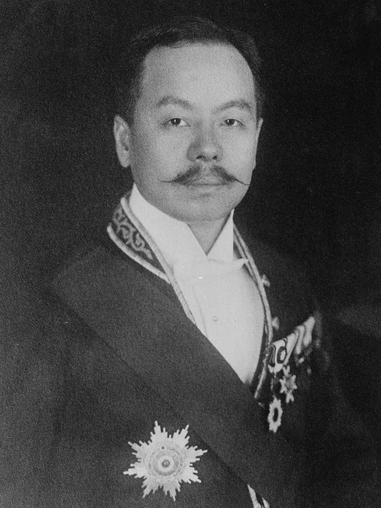
Hioki Eki, Japan's minister in Beijing, who handed Yuan the Twenty-One Demands on 18 January 1915. Bain News Service, Library of Congress. Public domain, Wikimedia Commons.
In 1914 Japan, Britain's ally, seized Germany's holdings in Shandong.
On 18 January 1915 Japan's minister handed Yuan twenty-one secret demands in five groups.
Group 5 would have put Japanese advisers in China's government and police; after protests Japan dropped it.
On 7 May Japan sent an ultimatum; on 9 May Yuan accepted the rest.
Names in This Story
Twenty-One DemandsJapan's secret demands on China, January 1915
National Humiliation Day7 or 9 May, remembered from 1915
Sources: Ebrey, Ch. 24, p. 425; Foreign Relations of the United States, 1915, doc. 154. Image: Bain News Service, Library of Congress, undated.
Q4 story · The Temple of Heaven · 23 December 1914
Yuan Restored the Worship of Confucius and Offered the Emperor's Sacrifice at the Temple of Heaven
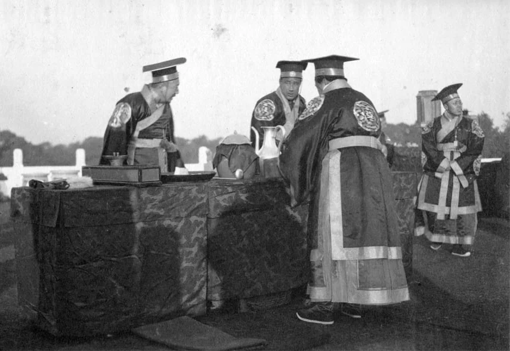
Yuan Shikai (far left) and his officials at the altar during the winter solstice sacrifice at the Temple of Heaven, Beijing, 23 December 1914. Public domain, Wikimedia Commons.
In 1914 Yuan restored the state rites to Confucius, which the republic had dropped.
Ebrey: he "announced that Confucianism would be made the state religion."
At the winter solstice of 1914 he offered the sacrifice to Heaven, a rite only emperors had performed.
Young people who had cheered the republic saw the old order coming back.
Sources: Ebrey, Ch. 24, p. 419; Young, The Presidency of Yuan Shih-k'ai (1977). Image: unknown photographer, 1914.
Q4 story · Yunnan to Beijing · December 1915–June 1916
The Provinces Revolted, Yuan Gave Up the Throne in March 1916, and in June He Died
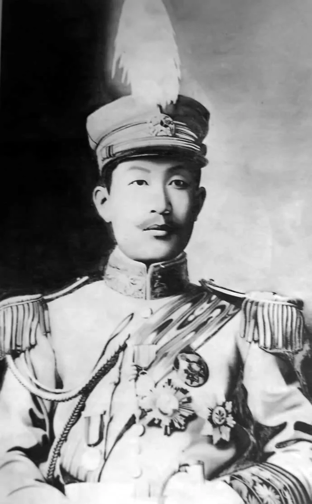
Cai E (1882–1916), the general who led Yunnan's revolt against Yuan's empire in December 1915. Public domain, Wikimedia Commons.
On 25 December 1915 Yunnan, led by General Cai E, declared independence to protect the republic.
Guizhou, Guangxi, and other southern provinces joined; Yuan's own generals held back.
Japan and the European powers advised Yuan to give up the plan.
On 22 March 1916 he cancelled the empire; on 6 June he died, aged 56.
Names in This Story
Cai Egeneral who led the Yunnan revolt, 1882–1916; "tsai uh"
HongxianYuan's reign title, 1916: "Grand Constitution"
Sources: Ebrey, Ch. 24, p. 419; Young, The Presidency of Yuan Shih-k'ai (1977). Image: unknown photographer, before 1916.
Reading Guide · Review Question 4
Reading Guide · Review Question 4
Review Question 4
Yuan Shikai and the Subversion of the Republic: Why did the 1911 Revolution fail to produce a stable democratic republic, and how did Yuan Shikai consolidate his autocratic rule?
Recap · Armies and their generals · since the 1850s
Recap: Since the Taiping War, Chinese Armies Had Been Loyal to Their Own Generals
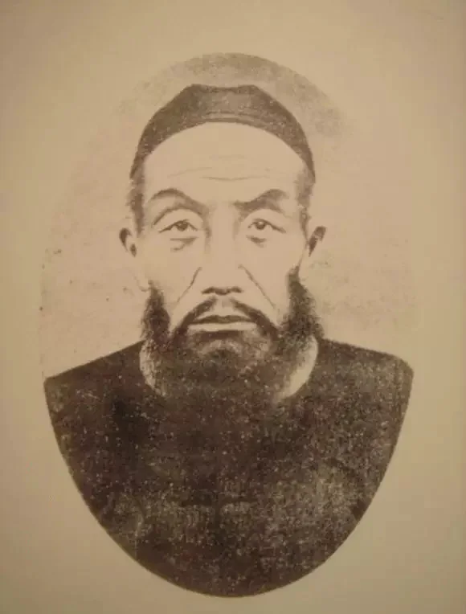
Zeng Guofan (1811–1872), who raised the Xiang Army against the Taiping, photographed in 1871. Public domain, Wikimedia Commons.
In the 1850s the Qing's own armies could not beat the Taiping.
Officials like Zeng Guofan and Li Hongzhang raised armies whose men were loyal to them · Ch. 18 L2 · regionalism ↗
Yuan Shikai's Northern Army grew from Li's army, and its officers were loyal to Yuan.
When Yuan died in 1916, each of his generals still had an army.
Sources: Ebrey, Ch. 24, p. 419; Ch. 18 L2 for the regional armies. Image: unknown photographer, 1871.
Q5 concept · Warlord
Concept: A Warlord Was a General Who Ruled a Territory with His Own Army
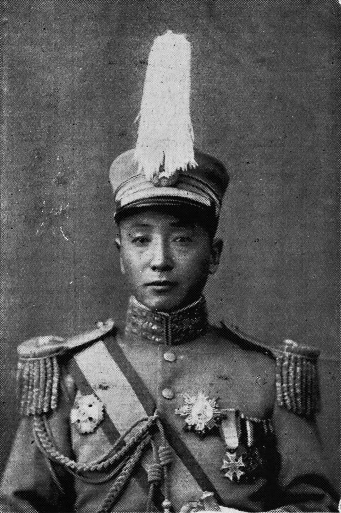
Zhang Zuolin (1875–1928), the warlord of Manchuria. Public domain, Wikimedia Commons.
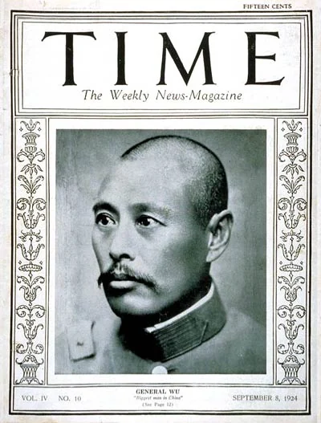
Wu Peifu (1874–1939) on the cover of the American magazine Time, 8 September 1924. Public domain, Wikimedia Commons.
Concept
Warlord
A military commander who controls a territory through an army loyal to him personally, collects its taxes, and acts independently of any central government.
Zhang Zuolin, a former bandit, ruled Manchuria from Mukden (Shenyang).
Wu Peifu, a degree-holder turned officer, led the Zhili army in central China.
Each needed land to tax, railways to move troops, and foreign friends to supply guns.
Sources: Ebrey, Ch. 24, pp. 419–420; James E. Sheridan, China in Disintegration (1975). Images: unknown photographer, before 1925; Time, 1924.
Q5 story · Beijing · 1916–1928
In Beijing, Six Presidents and Twenty-Five Cabinets Came and Went as Warlords Fought for the Capital
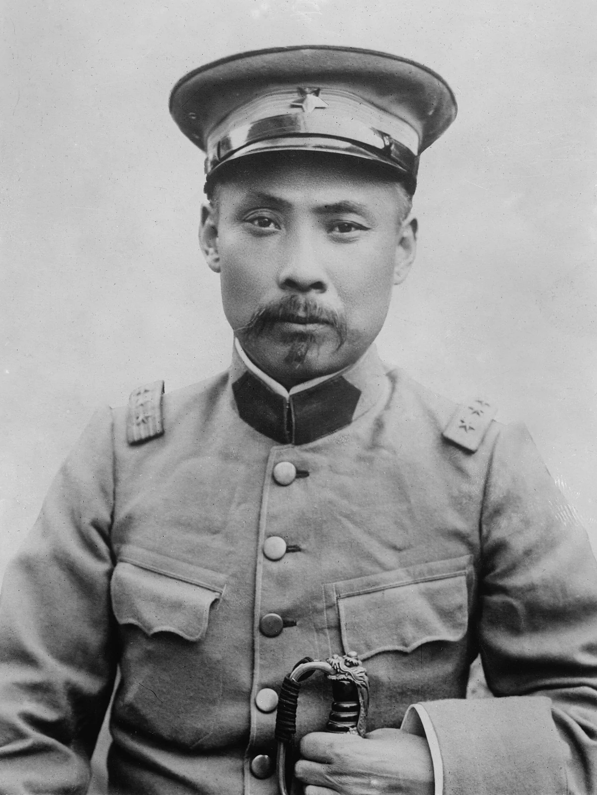
Duan Qirui (1865–1936), Yuan's leading general, who dominated the Beijing government as premier after 1916. Photograph of 1913. Public domain, Wikimedia Commons.
Whoever held Beijing claimed to be the government; foreign powers recognized it.
Ebrey counts six presidents and twenty-five cabinets.
In July 1917 a general even put Puyi back on the throne, for twelve days.
The northern cliques fought major wars in 1920, 1922, and 1924; in 1923 Cao Kun bought the presidency from parliament.
Wu PeifuZhili clique general, 1874–1939; "woo pay-foo"
Zhang Zuolinwarlord of Manchuria, 1875–1928; "jahng dzwaw-lin"
Sources: Ebrey, Ch. 24, pp. 419–420; Sheridan, China in Disintegration (1975). Image: unknown photographer, 1913.
Q5 story · The villages · 1916–1928
Armies Lived Off the Land: Soldiers Seized Grain, Animals, and Men from the Villages
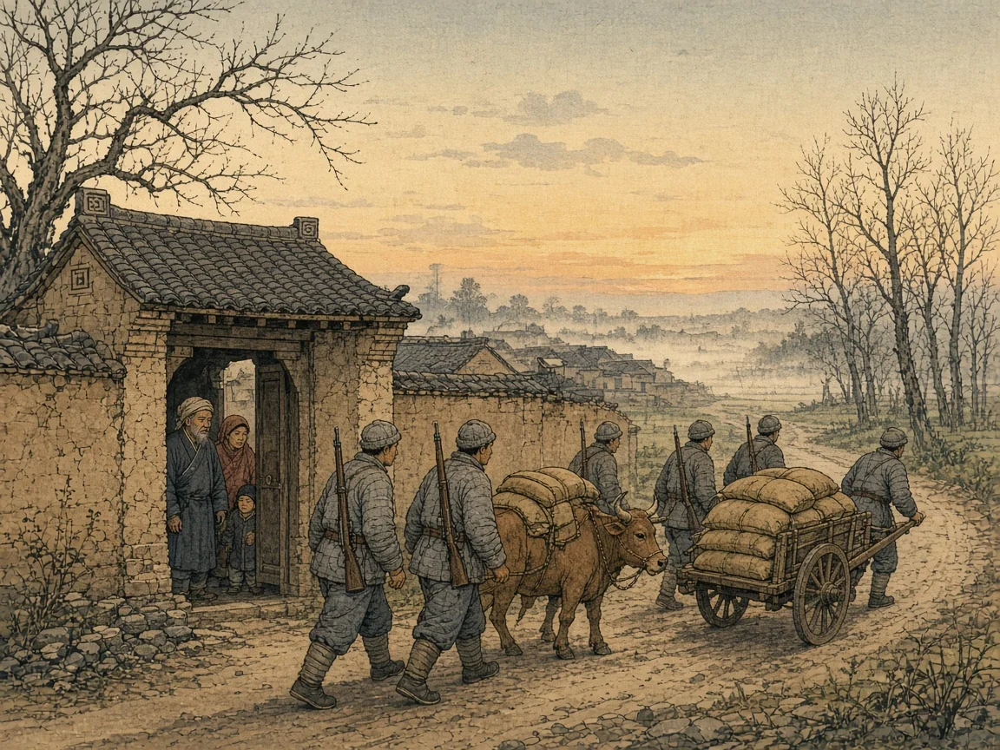
AI-generated illustration in a woodblock-print style, made for this deck: at dawn, soldiers of a 1920s warlord army lead away a farmer's ox and haul sacks of grain out of a walled north China village, while a family watches from its gateway. An interpretation, not a historical source.
Armies grew from about half a million men in 1916 to well over a million by the mid-1920s.
Soldiers were often unpaid, so they took food, carts, and animals wherever they marched.
They seized farmers as porters and sometimes killed those who resisted.
"My men would surround a village before dawn and fire several shots to intimidate the people. We told them to come out and give up. This was the classic way of raiding a village.… We took corn, rice, potatoes, taro."
A warlord officer, quoted in Sheridan, China in Disintegration, p. 91, and Ebrey, p. 420
Sources: Ebrey, Ch. 24, p. 420; Sheridan, China in Disintegration (1975), p. 91. Image: AI-generated illustration made for this deck.
Q5 story · Money and guns · 1916–1928
Warlords Invented New Taxes, Bought Foreign Guns, and Forced Peasants to Grow Opium
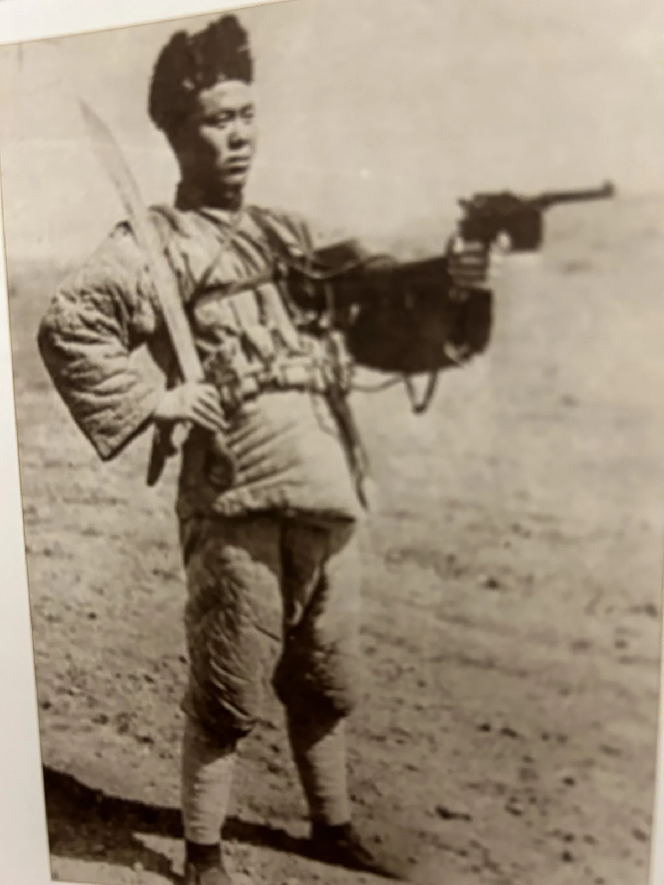
A soldier of the 1920s with a German Mauser pistol and a Chinese broadsword. Photographed from a museum print; photographer unknown. Public domain, Wikimedia Commons.
To buy weapons, warlords added new taxes and surcharges on land, trade, and goods.
In Sichuan some districts collected land tax years, even decades, in advance.
Foreign powers sold arms and backed their favorites, despite a 1919 arms embargo.
Opium, nearly wiped out in many provinces, came back when warlords made farmers plant poppies for revenue.
Sources: Ebrey, Ch. 24, p. 420; Sheridan, China in Disintegration (1975). Image: unknown photographer, 1920s.
Q5 story · Railways and rivers · 1916–1928
Warlords Wrecked the Railways and Let the Yellow River Dikes Decay
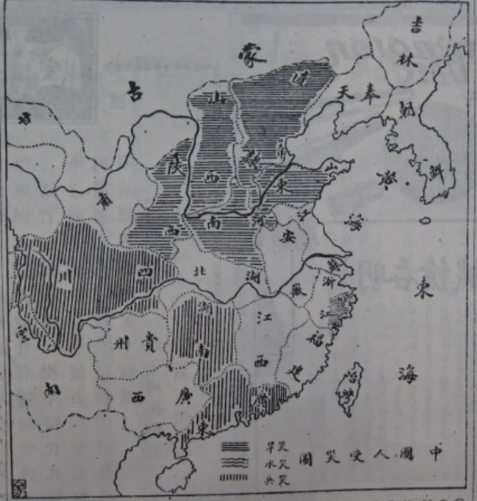
A famine map printed in the Shanghai newspaper Shenbao, March 1921, marking the northern provinces struck by the famine of 1920–21. Public domain, Wikimedia Commons.
Armies seized trains to move troops, so trade and mail stopped for weeks.
Rail lines, bridges, and stations were cut or wrecked in the fighting.
No one maintained the dikes on the Yellow River, and floods followed.
When drought struck north China in 1920–21, about half a million people died.
Sources: Ebrey, Ch. 24, p. 420; Lillian M. Li, Fighting Famine in North China (2007). Image: Shenbao, 1921.
Q5 story · The frontiers · 1911–1924
Tibet and Mongolia Broke Away, and Japan Gained Ground in Manchuria
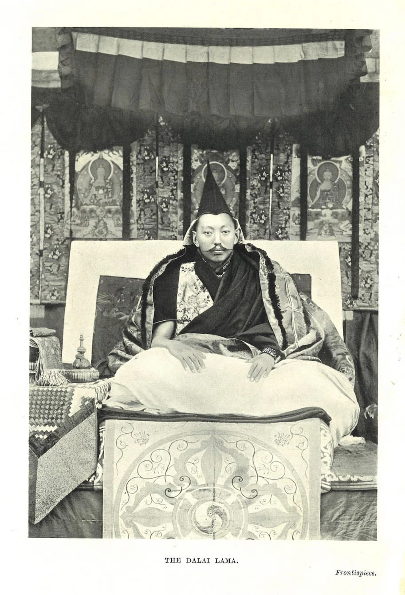
The Thirteenth Dalai Lama (1876–1933), photographed in India in 1910, during his exile from Lhasa. Public domain, Wikimedia Commons.
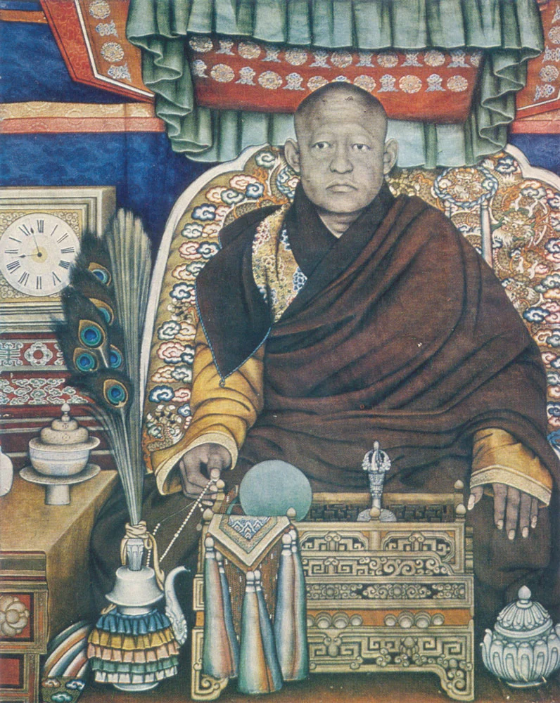
The Bogd Khan (1869–1924), the Buddhist leader whom the Mongols made their ruler in 1911. Painting by Marzan Sharav. Public domain, Wikimedia Commons.
December 1911: Outer Mongolia declared independence under the Bogd Khan, with Russian backing.
1912–13: Tibet expelled the Chinese garrison, and the Dalai Lama declared independence.
Ebrey: Tibet fell "under British sway and Mongolia under Russian."
In Manchuria, Japan ran the South Manchuria Railway and dealt with Zhang Zuolin.
Sources: Ebrey, Ch. 24, pp. 419–420; Melvyn C. Goldstein, A History of Modern Tibet (1989). Images: Th. Parr, 1910; Marzan Sharav, before 1924.
Reading Guide · Review Question 5
Reading Guide · Review Question 5
Review Question 5
The Warlord Era: Describe the political and social conditions in China during the Warlord Era following Yuan Shikai's death in 1916. How did this fragmentation affect the country's infrastructure and the peasantry?
Next: In 1915 a Shanghai Magazine Told the Young to Reject the Old
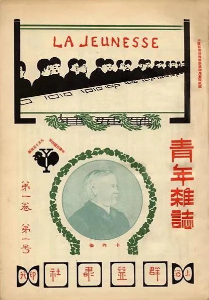
The cover of the first issue of Youth Magazine (Qingnian zazhi), Shanghai, 15 September 1915, edited by Chen Duxiu. From 1916 it was called New Youth. Public domain, Wikimedia Commons.
While Yuan prepared his throne, Chen Duxiu started a magazine for the young.
It said Confucian loyalty and filial piety were "a slavish morality."
Its readers were the students who had watched the republic fail · Ch. 24 L3 ↗
Today's lecture ends here. Continue on your own: these slides are required study. They tell how China's factories, banks, and businessmen grew while Europe was at war, what life was like inside the new mills, and they end with Review Question 8.
"A little learning is a dang'rous thing; Drink deep, or taste not the Pierian spring."Alexander Pope, An Essay on Criticism, 1711
Pierian Spring · Q8 story · Shanghai · 1872
Recap: China's First Modern Companies, Like Li Hongzhang's Steamship Line, Were Run by Officials
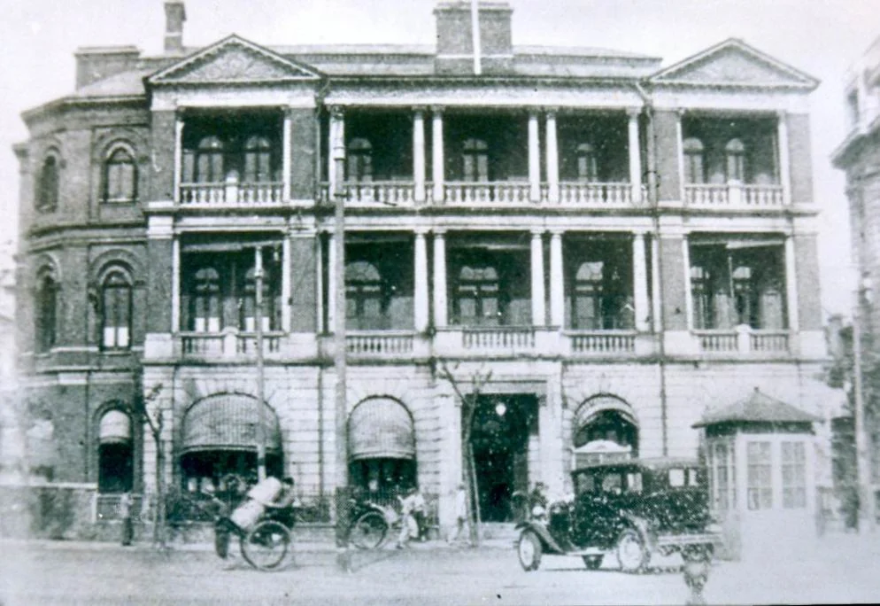
The Shanghai head office of the China Merchants Steam Navigation Company, founded by Li Hongzhang in 1872, photographed in 1901. Public domain, Wikimedia Commons.
Merchants put up money, but officials supervised and took the profits.
Ebrey: these were "not true capitalist" ventures.
Private Chinese industry stayed small until the 1900s.
Sources: Ebrey, Ch. 24, p. 422; Ch. 18 L3 for self-strengthening. Image: China Merchants Steam Navigation Company, 1901.
Pierian Spring · Q8 story · The treaty ports · 1895–1914
After 1895 Japan Could Build Factories in China, and the Other Powers Followed
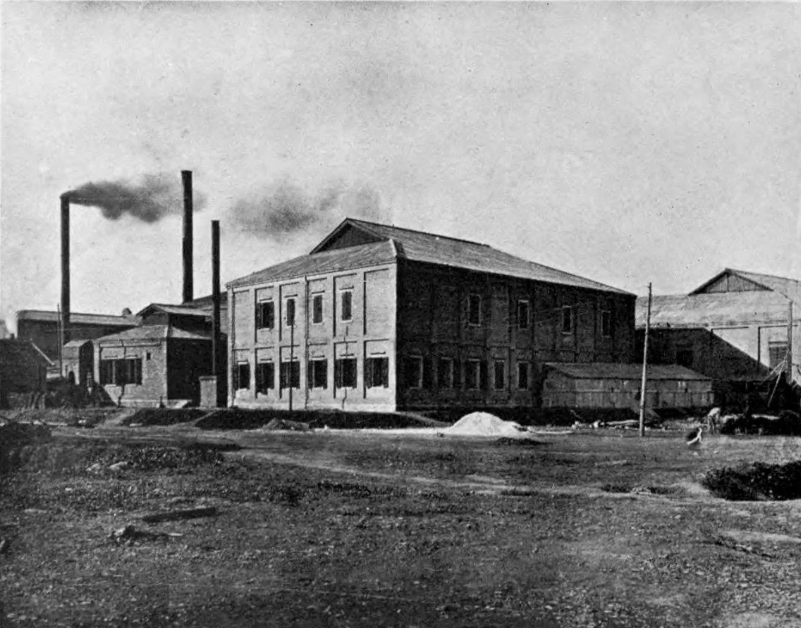
Factories of the Japan Cotton Trading Company in China, published in 1908 in Twentieth Century Impressions of Hongkong, Shanghai, and Other Treaty Ports of China. Public domain, Wikimedia Commons.
The Treaty of Shimonoseki (1895) let Japanese open factories in the treaty ports · Ch. 18 L4 · Shimonoseki ↗
Under most-favored-nation clauses, Britain and the others gained the same right.
Chinese labor was very cheap by world standards, so foreign mills spread.
By 1914 a Chinese bourgeoisie of merchants, bankers, industrialists, and compradors had formed.
Names in This Story
bourgeoisiethe urban middle and business class; "boor-zhwah-zee"
compradorChinese manager for a foreign firm
Sources: Ebrey, Ch. 24, p. 422; Ch. 18 L4 for the Treaty of Shimonoseki. Image: Arnold Wright, ed., 1908.
Pierian Spring · Q8 story · The war years · 1914–1923
While Europe Fought, Chinese Textile Mills Rose from 22 to 109 and Modern Banks from 7 to 131
From 1914 Britain, France, Germany, and Russia had no goods to spare for export.
Imports fell, so Chinese factories could sell at home; Europe also bought more from China.
Telephone and electric companies opened even in county seats and market towns.
22 → 109
Chinese textile mills, 1911–1921
13 → 20
million tons of coal, 1913–1919
7 → 131
modern banks, 1912–1923
Sources: Ebrey, Ch. 24, pp. 422, 424.
Pierian Spring · Q8 story · The cities · 1904–1920s
Chambers of Commerce Gave the New Bourgeoisie a Voice, and Some Ran Their Cities
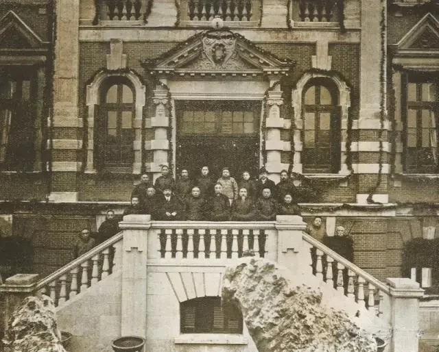
The opening of the new assembly hall of the Shanghai General Chamber of Commerce, 1916. Public domain, Wikimedia Commons.
After 1904 the Qing allowed chambers of commerce, and they spread to cities large and small.
They spoke for merchants and industrialists to officials and the press.
After 1915, as the national government decayed, many ran city services: sanitation, schools, and police.
Shanghai's chamber opened a grand new hall in 1916.
Sources: Ebrey, Ch. 24, p. 422; Marie-Claire Bergère, The Golden Age of the Chinese Bourgeoisie, 1911–1937 (1989). Image: unknown photographer, 1916.
Pierian Spring · Q8 story · The Commercial Press · 1912–1927
A Western Degree Paid More Than Twice as Much as a Chinese One
The Commercial Press in Shanghai, China's largest publisher, paid staff by where they had studied.
Returned students took jobs in the new businesses, and foreign degrees brought prestige.
80
yuan a month · Chinese college
100–120
Japanese college
150
Japanese imperial college
200
Western college
250
Harvard, Yale, Oxford, Cambridge
Sources: Ebrey, Ch. 24, p. 422.
Pierian Spring · Q8 story · Wuxi and Shanghai · 1901–1920
The Rong Brothers Built a Flour and Cotton Empire from Wuxi
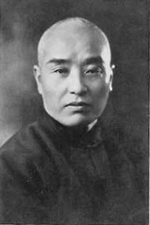
Rong Zongjing (1873–1938), the elder brother. Public domain, Wikimedia Commons.
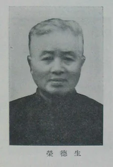
Rong Desheng (1875–1952), the younger brother, in 1949. Public domain, Wikimedia Commons.
The Rongs came from a merchant family in Wuxi, west of Shanghai.
They opened a flour mill in 1901 and another in 1913.
From 1914 to 1920 they built eight new factories and moved into cotton spinning.
People called them China's kings of flour and cotton.
Sources: Ebrey, Ch. 24, p. 424; Sherman Cochran, Encountering Chinese Networks (2000). Images: unknown photographers; Rong Desheng, 1949.
Pierian Spring · Q8 story · The mills · 1910s–1920s
Children Worked Twelve-Hour Days, Seven Days a Week, in the New Mills
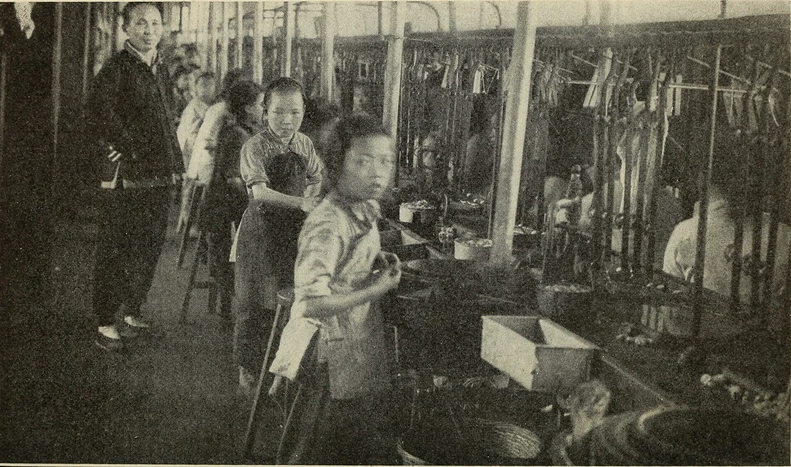
Girls at the basins of a Chinese steam silk filature (reeling mill), from Leo Duran, Raw Silk (New York, 1921). Public domain, Wikimedia Commons.
Ebrey: conditions were as bad as in Britain a century earlier.
Workers put in twelve-hour days, seven days a week; children worked, especially in textile mills.
Labor contractors recruited village girls and kept them in debt, with minimal food and housing.
Many mills were foreign-owned, increasingly Japanese, which sharpened anger.
Sources: Ebrey, Ch. 24, p. 424; Emily Honig, Sisters and Strangers: Women in the Shanghai Cotton Mills, 1919–1949 (1986). Image: Duran, Raw Silk, 1921.
Pierian Spring · Q8 story · Shanghai · 1917
Shanghai's Great World Offered Six Floors of Opera, Acrobats, and Peep Shows
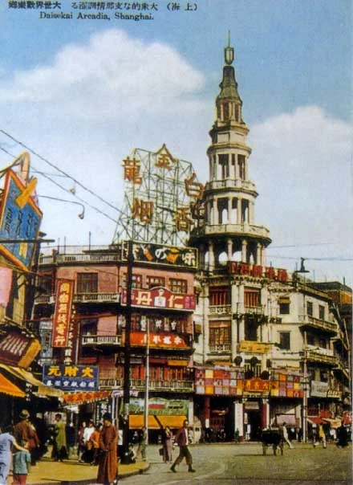
The Great World amusement center on a Shanghai street corner, in a colored postcard of the 1930s. Public domain, Wikimedia Commons.
In 1917 Huang Chujiu, who had grown rich selling patent medicines, opened the Great World.
It was billed as the Crystal Palace and Coney Island in one, but its customers were mostly Chinese.
Floors held magicians, sing-song girls, barbers, earwax extractors, acupuncturists, storytellers, and a temple.
On top: tightrope walkers, mahjong, lottery tickets, and marriage brokers.
Sources: Ebrey, Ch. 24, p. 421. Image: unknown publisher, 1930s.
Reading Guide · Review Question 8
Reading Guide · Review Question 8
Review Question 8
Industrial Growth and the Urban Bourgeoisie: Examine the economic transformations in China during the 1910s and 1920s. How did World War I inadvertently stimulate Chinese industrialization and alter the nation's social classes?
Patricia Buckley Ebrey, A History of China, Chapter 24, "Remaking China (1900–1927)," pp. 419–422, 424–425. All page references in this deck are to these pages.
A warlord officer, in James E. Sheridan, China in Disintegration: The Republican Era in Chinese History, 1912–1949 (1975), p. 91, as quoted in Ebrey, p. 420 (slide q).
Further reading beyond Ebrey
Ernest P. Young, The Presidency of Yuan Shih-k'ai: Liberalism and Dictatorship in Early Republican China (1977) (slides b, d–h, k, l).
Foreign Relations of the United States, 1913, doc. 197 (the loan) and 1915, doc. 154 (the ultimatum), Office of the Historian (slides f, j).
James E. Sheridan, China in Disintegration (1975) (slides o–r).
Lillian M. Li, Fighting Famine in North China: State, Market, and Environmental Decline, 1690s–1990s (2007) (slide s).
Melvyn C. Goldstein, A History of Modern Tibet, 1913–1951 (1989) (slide t).
Marie-Claire Bergère, The Golden Age of the Chinese Bourgeoisie, 1911–1937, trans. Janet Lloyd (1989) (slides y, aa).
Sherman Cochran, Encountering Chinese Networks: Western, Japanese, and Chinese Corporations in China, 1880–1937 (2000) (slide cc).
Emily Honig, Sisters and Strangers: Women in the Shanghai Cotton Mills, 1919–1949 (1986) (slide dd).
Images (real, via Wikimedia Commons, except q)
a, k: Yuan Shikai at the winter-solstice sacrifice, Temple of Heaven, 23 December 1914. b: Hongxian coin, Tianjin, 1916. Public domain.
c: Fu Sheng, Tianjin, Yuan Shikai, about 1900. d: K. T. Thompson studio, Sun Yatsen, 1911; Yuan with officers, March 1912. Public domain.
e, g, l: Song Jiaoren; Huang Xing; Cai E. Unknown photographers, before 1916. Public domain.
f: Deutsch-Asiatische Bank, Reorganisation Loan bond, 1913. h: Sir Alexander Hosie collection, 1914. i: published 1915. Public domain.
j: Bain News Service, Library of Congress. n: Zeng Guofan, 1871. o: Zhang Zuolin; Time, 8 September 1924. p: Duan Qirui, 1913. Public domain.
r: a soldier with a Mauser pistol, 1920s. s: Shenbao, 1921. t: Th. Parr, 1910; Marzan Sharav, before 1924. v: Qingnian zazhi, 1915. Public domain.
x: China Merchants Steam Navigation Co., 1901. y: Arnold Wright, ed., 1908. aa: 1916. cc: the Rong brothers. dd: Leo Duran, Raw Silk, 1921. ee: postcard, 1930s. Public domain.
q: AI-generated illustration made for this deck (2026); not a historical source.